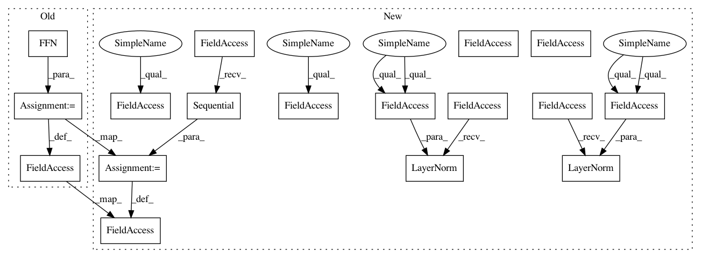

b7bdc5b940af98a8014e9e2fc63d5e24cc3b013b,layers/eight_mile/tf/layers.py,TransformerEncoder,__init__,#TransformerEncoder#Any#Any#Any#Any#Any#Any#Any#Any#Any#Any#Any#Any#Any#,2510
Before Change
else:
self.self_attn = MultiHeadedAttention(num_heads, d_model, pdrop, scale=scale, d_k=d_k)
self.ffn = FFN(d_model, activation_type, d_ff, ffn_pdrop, name="ffn")
self.ln1 = tf.keras.layers.LayerNormalization(epsilon=layer_norm_eps)
self.ln2 = tf.keras.layers.LayerNormalization(epsilon=layer_norm_eps)
self.dropout = tf.keras.layers.Dropout(pdrop)
After Change
def tie_weight(weight, tie_shape):
Higher order function to share weights between two layers.
Tensorflow will take a custom_getter inside of a variable scope.
This method creates a getter that looks for a match in shapes. If they match,
The weights are transposed and shared.
def tie_getter(getter, name, *args, **kwargs):
if kwargs["shape"] == tie_shape:
return tf.transpose(weight)
return getter("{}".format(name), *args, **kwargs)
return tie_getter
def rnn_cell_w_dropout(hsz, pdrop, rnntype, st=None, variational=False, training=False):
Produce a single RNN cell with dropout
:param hsz: (``int``) The number of hidden units per LSTM
In pattern: SUPERPATTERN
Frequency: 3
Non-data size: 17
Instances
Project Name: dpressel/mead-baseline
Commit Name: b7bdc5b940af98a8014e9e2fc63d5e24cc3b013b
Time: 2020-08-16
Author: wliu@interactions.com
File Name: layers/eight_mile/tf/layers.py
Class Name: TransformerEncoder
Method Name: __init__
Project Name: dpressel/mead-baseline
Commit Name: b97fe6310224efd2e7449e53d067f9e3adc178a5
Time: 2020-07-21
Author: wliu@interactions.com
File Name: layers/eight_mile/tf/layers.py
Class Name: TransformerEncoder
Method Name: __init__
Project Name: dpressel/mead-baseline
Commit Name: 08a31864a8e7a633546790d8fed54455b914d96b
Time: 2019-06-18
Author: dpressel@gmail.com
File Name: python/baseline/pytorch/transformer.py
Class Name: TransformerEncoder
Method Name: __init__
Project Name: dpressel/mead-baseline
Commit Name: b7bdc5b940af98a8014e9e2fc63d5e24cc3b013b
Time: 2020-08-16
Author: wliu@interactions.com
File Name: layers/eight_mile/tf/layers.py
Class Name: TransformerEncoder
Method Name: __init__